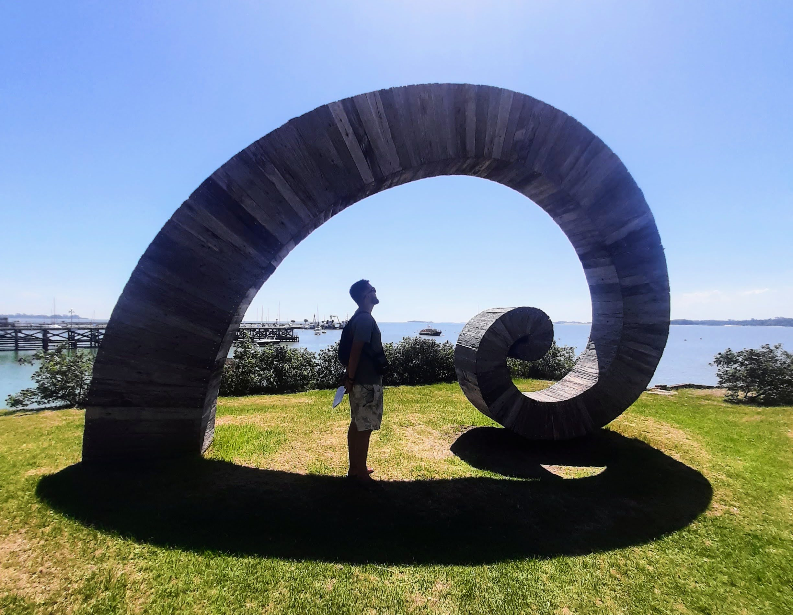

Sobre mim!
Nasci em São Leopoldo-RS no ano de 1994 e cresci em Veranópolis na Serra Gaúcha onde vivo hoje! Esta página, além de uma prática educativa, é uma tentativa em tornar real diversos objetivos que tenho para o futuro, entre eles conhecer lugares e pessoas que me agreguem, para ser alguém que contribua com o mundo! Além, é claro, de passar um bom tempo e me divertir.
Mais do que destinos repletos de natureza, onde almejo encontrar, além de paz de espírito e a mão do Todo sobre a vida, busco também referências de pessoas, presentes fisicamente ou em memórias! Pessoas com quem valha pena compartilhar momentos e reflexões!
Esta viagem, que pretende explorar a Patagônia Argentina e Chilena, acontecerá no final de 2023. Pretendo, em 2024, visitar a parte norte do nosso subcontinente com destino ao México e seu "Dia dos Mortos". Me planejo com antecedência esperando genuinamente que meus próprios planos mudem, pois oxalá, até lá serei outra pessoa!